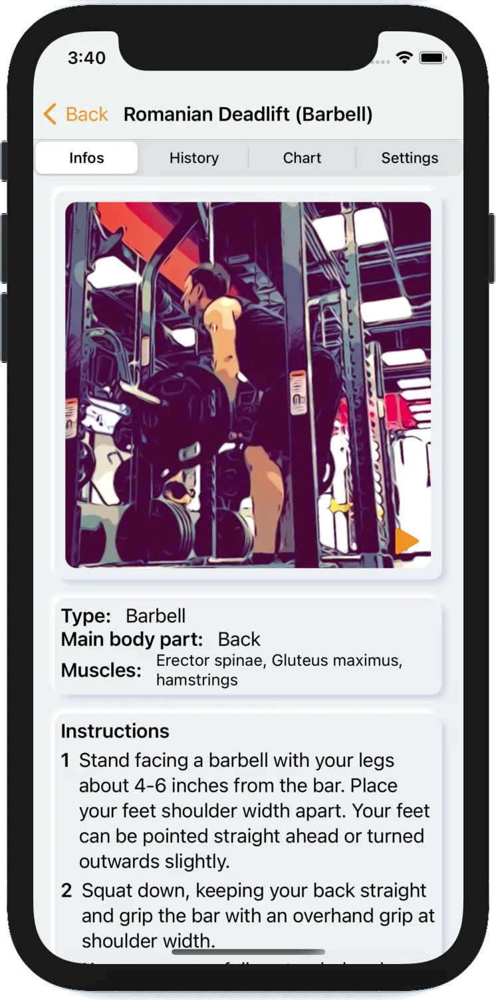
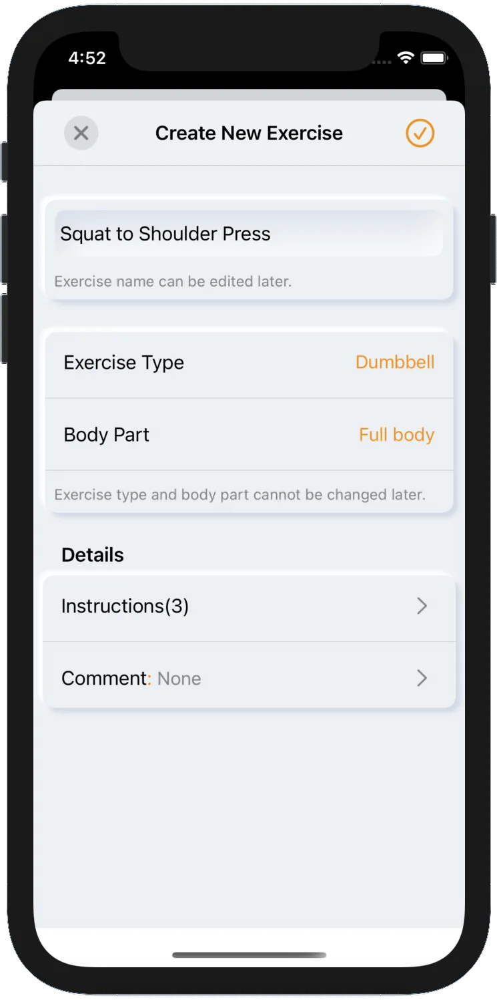
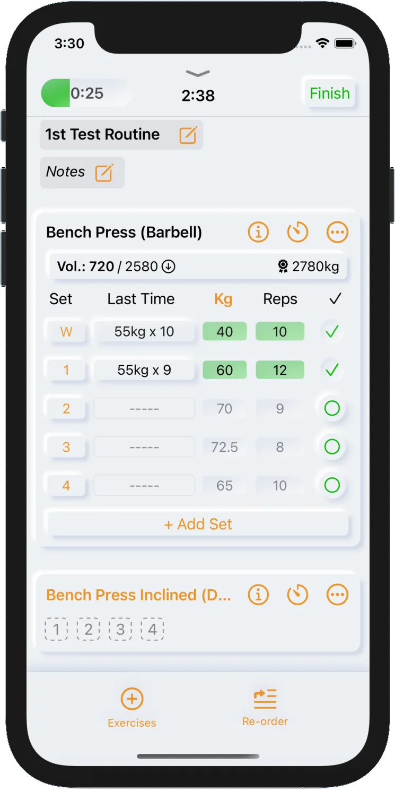
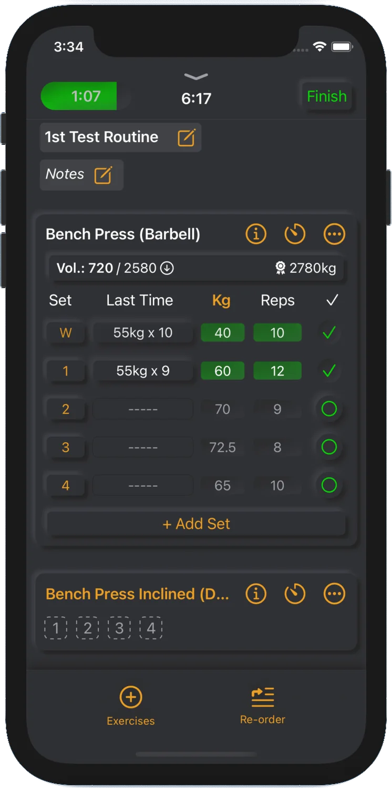
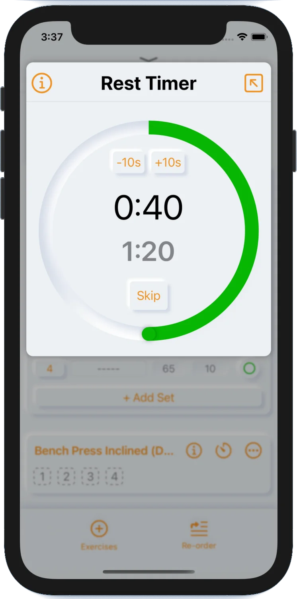
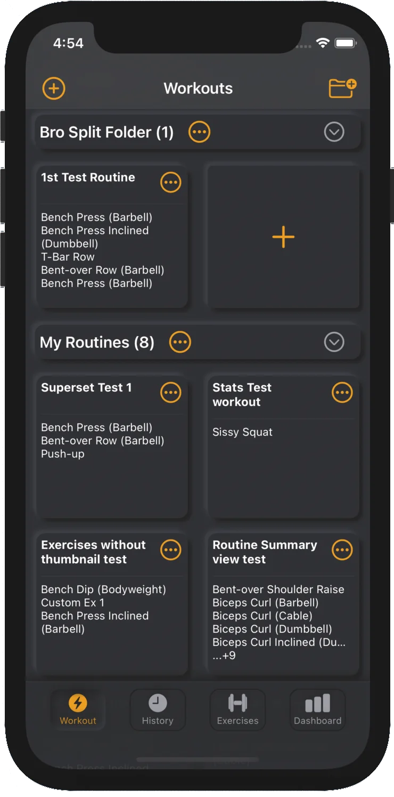
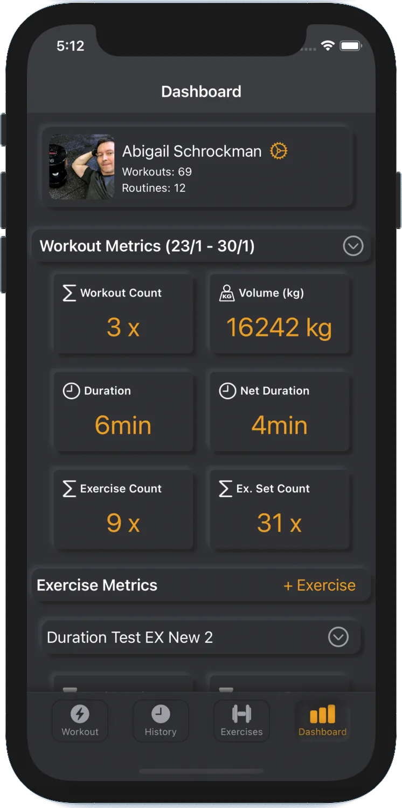
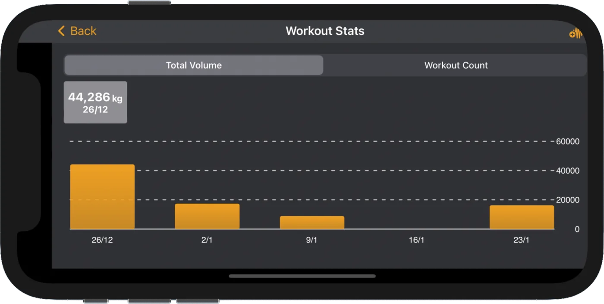
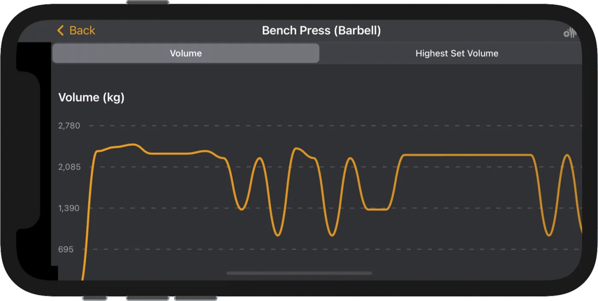

Log the work. Watch it add up.
Muscular is a workout log for the gym, the garage and the park. Log sets the way you actually train, see what you lifted last time, and follow the progress in charts.
Over 100 exercises. Free to download, then one purchase unlocks everything. No subscription.
Built around the set you're about to do.
Most workout apps want a whole program before you can log a single rep. Muscular works the other way: start a workout, change it as you go, and adjust the details that slow you down on the gym floor.
While you train
- Units per exerciseSome lifts in kg, others in lb. Switch per exercise, mid-session.
- Change the planReplace, reorder or skip exercises without losing the log.
- Rest timerSet a rest time per exercise, or adjust it between sets.
- Double setsFor single-side work and drop sets. The timer fires every second set.
- Assisted bodyweightSwitch each set between weighted and assisted, one set at a time.
- Duration exercisesLog time instead of weight, with a built-in set timer.
After the workout
- Last time, next to nowEvery set shows what you lifted in the previous session.
- Personal recordsThe metric bar compares the current set with your best.
- Honest volumeBodyweight percentages make bodyweight work count in the totals.
- ChartsWorkout activity and per-exercise progress over time.
- DashboardCount, volume, duration and sets in one place.
- WidgetsYour workout chart and metrics on the home screen.
Also included: workout programs and routines, supersets, HealthKit sync, Siri shortcuts, and a light or dark look.
Get Muscular on the App Store

100+ exercises, or write your own.
Muscular ships with strength, bodyweight and duration exercises, each with photos and instructions. If your lift isn't there, add it: name it, pick the body part, set the bodyweight percentage and log it like any other exercise.
A look inside the log.
Every screen is built for one hand between sets. Light or dark, iPhone or iPad.





Scroll sideways to see more.
Progress you can actually see.
Numbers on a screen are easy to ignore. Muscular turns them into charts: how often you trained, how much you moved, and whether a specific lift is going anywhere.


Buy it once.
Muscular is free to download. If it fits how you train, one purchase unlocks unlimited workouts and routines. No subscription, no renewal.
iPhone and iPad. Requires iOS 14.1 or later.
- DownloadFree
- Unlimited workouts and routinesOne purchase
- SubscriptionNone
- Works oniPhone and iPad
Stuck, or spotted a bug?
Email me. I'm the developer, so your message goes straight to the person who can fix it.
muscular-support@timepod.devIncluding a few details gets you a faster answer:
- The app version and your iOS version
- Your device (iPhone or iPad)
- What you were doing when the problem happened
Support requests are usually answered within a couple of days.